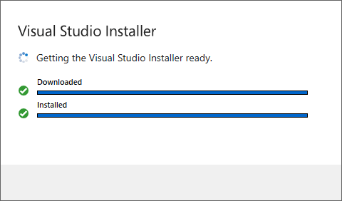
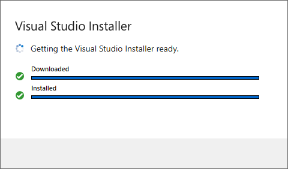
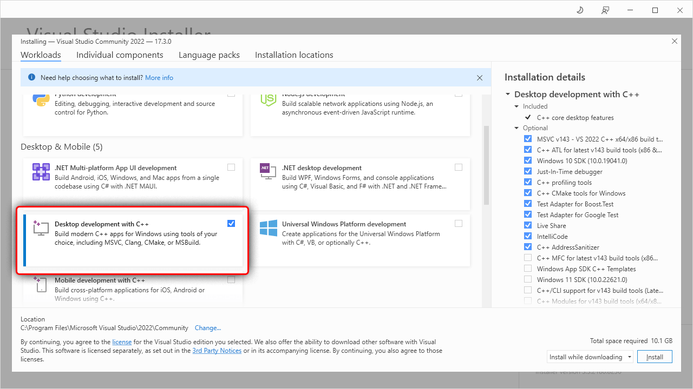
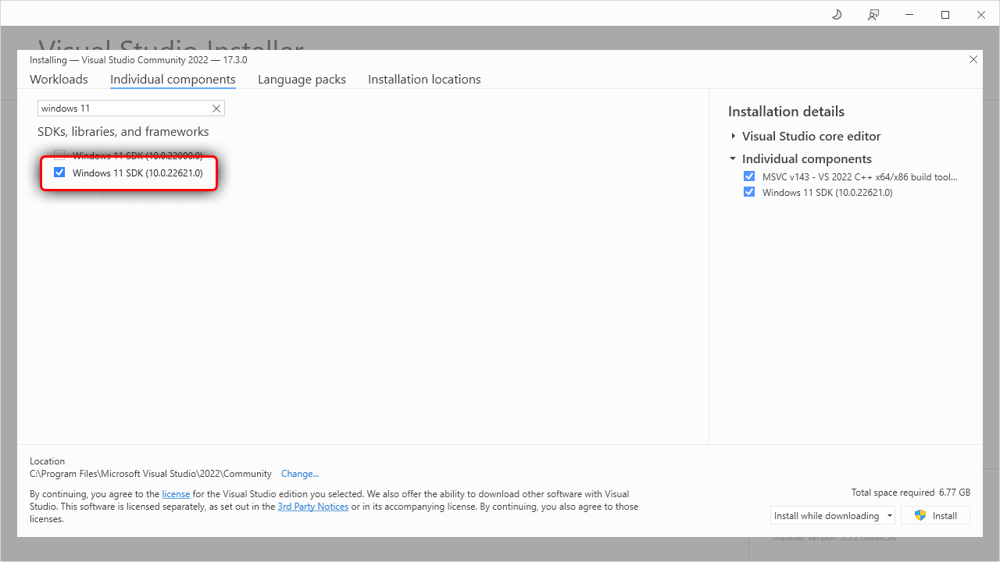
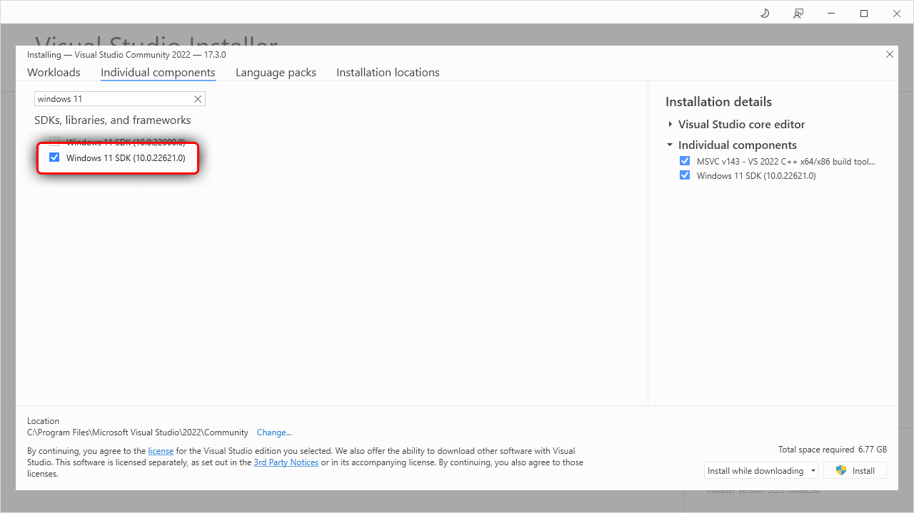

Introduction
rustup installs The Rust Programming Language from the official release channels, enabling you to easily switch between stable, beta, and nightly compilers and keep them updated. It makes cross-compiling simpler with binary builds of the standard library for common platforms. And it runs on all platforms Rust supports.
Check out the Concepts chapter for an overview of how rustup works and some of the terminology it uses. The Installation chapter covers installing rustup and getting started.
The source code of rustup and this manual may be found at https://github.com/rust-lang/rustup. If you find a problem, check out the issue tracker.
Release notes for rustup may be found in the CHANGELOG.
Installation
Follow the instructions at https://www.rust-lang.org/tools/install. If that doesn’t work for you there are other installation methods.
rustup installs rustc, cargo, rustup and other standard tools to
Cargo’s bin directory. On Unix it is located at $HOME/.cargo/bin and on
Windows at %USERPROFILE%\.cargo\bin. This is the same directory that cargo install will install Rust programs and Cargo plugins.
This directory will be in your $PATH environment variable, which means you
can run them from the shell without further configuration. Open a new shell
and type the following:
rustc --version
If you see something like rustc 1.19.0 (0ade33941 2017-07-17) then you are
ready to Rust. If you decide Rust isn’t your thing, you can completely remove
it from your system by running rustup self uninstall.
Choosing where to install
rustup allows you to customise your installation by setting the environment
variables CARGO_HOME and RUSTUP_HOME before running the rustup-init
executable. As mentioned in the Environment Variables section, RUSTUP_HOME
sets the root rustup folder, which is used for storing installed toolchains
and configuration options. CARGO_HOME contains cache files used by cargo.
Note that you will need to ensure these environment variables are always set
and that CARGO_HOME/bin is in the $PATH environment variable when using
the toolchain.
Installing nightly
If you specify the nightly channel when installing rustup, the
rustup-init script will do a “forced” installation by default. A “forced”
installation means it will install the nightly channel regardless of whether
it might be missing components that you want. If you want to install rustup
with the nightly channel, and ensure it has the components that you want, you
will need to do this in two phases. For example, if you want to make a fresh
installation of rustup and then install nightly along with clippy or
miri, first install rustup without a toolchain:
curl --proto '=https' --tlsv1.2 -sSf https://sh.rustup.rs | sh -s -- --default-toolchain none -y
Next you can install nightly allowing rustup to downgrade until it finds
the components you need:
rustup toolchain install nightly --allow-downgrade --profile minimal --component clippy
This can be used to great effect in CI, to get you a toolchain rapidly which meets your criteria.
Enable tab completion for Bash, Fish, Zsh, or PowerShell
rustup now supports generating completion scripts for Bash, Fish, Zsh, and
PowerShell. See rustup help completions for full details, but the gist is as
simple as using one of the following:
# Bash
$ rustup completions bash > ~/.local/share/bash-completion/completions/rustup
# Bash (macOS/Homebrew)
$ rustup completions bash > $(brew --prefix)/etc/bash_completion.d/rustup.bash-completion
# Fish
$ mkdir -p ~/.config/fish/completions
$ rustup completions fish > ~/.config/fish/completions/rustup.fish
# Zsh
$ rustup completions zsh > ~/.zfunc/_rustup
# PowerShell v5.0+
$ rustup completions powershell >> $PROFILE.CurrentUserCurrentHost
# or
$ rustup completions powershell | Out-String | Invoke-Expression
Note: you may need to restart your shell in order for the changes to take effect.
For zsh, you must then add the following line in your ~/.zshrc before
compinit:
fpath+=~/.zfunc
In Xonsh you can reuse Fish completion by installing xontrib-fish-completer.
Windows
rustup works the same on Windows as it does on Unix, but there are some
special considerations for Rust developers on Windows. As mentioned on the
Rust download page, there are two ABIs in use on Windows:
the native (MSVC) ABI used by Visual Studio, and the GNU ABI used by the
GCC toolchain. Which version of Rust you need depends largely on what C/C++
libraries you want to interoperate with: for interop with software produced by
Visual Studio use the MSVC build of Rust; for interop with GNU software built
using the MinGW/MSYS2 toolchain use the GNU build.
When targeting the MSVC ABI, Rust additionally requires an installation of
Visual Studio so rustc can use its linker and libraries.
When targeting the GNU ABI, no additional software is strictly required for basic use. However, many library crates will not be able to compile until the full MSYS2 with MinGW has been installed.
By default rustup on Windows configures Rust to target the MSVC ABI, that is
a target tuple of either i686-pc-windows-msvc, x86_64-pc-windows-msvc, or aarch64-pc-windows-msvc
depending on the CPU architecture of the host Windows OS. The toolchains that
rustup chooses to install, unless told otherwise through the toolchain
specification, will be compiled to run on that target tuple host and will
target that triple by default.
You can change this behavior with rustup set default-host or during
installation.
For example, to explicitly select the 32-bit MSVC host:
$ rustup set default-host i686-pc-windows-msvc
Or to choose the 64 bit GNU toolchain:
$ rustup set default-host x86_64-pc-windows-gnu
Since the MSVC ABI provides the best interoperation with other Windows
software it is recommended for most purposes. The GNU toolchain is always
available, even if you don’t use it by default. Just install it with rustup toolchain install:
$ rustup toolchain install stable-gnu
You don’t need to switch toolchains to support all windows targets though; a single toolchain supports all four x86 windows targets:
$ rustup target add x86_64-pc-windows-msvc
$ rustup target add x86_64-pc-windows-gnu
$ rustup target add i686-pc-windows-msvc
$ rustup target add i686-pc-windows-gnu
See the Cross-compilation chapter for more details on specifying different targets with the same compiler.
MSVC prerequisites
To compile programs into an exe file, Rust requires a linker, libraries and Windows API import libraries.
For msvc targets these can be acquired through Visual Studio.
Automatic install
If you don’t have Visual Studio already installed then rustup-init will offer to automatically install the prerequisites. Doing so means you can skip the rest of this page. However, it installs Visual Studio Community edition which may not be appropriate for all users. It is free for individuals, academic and open source use, but not for other uses, such as in proprietary enterprise software. Users should ask their organisation which edition is right for them. See licensing terms for more details.
WinGet
Alternatively Visual Studio can be installed via the WinGet package manager, which should be avaliable by default on recent versions of Windows. Run the following command in powershell or the command prompt:
winget install --id Microsoft.VisualStudio.2022.Community --source winget --force --override "--add Microsoft.VisualStudio.Component.VC.Tools.x86.x64 --add Microsoft.VisualStudio.Component.VC.Tools.ARM64 --add Microsoft.VisualStudio.Component.Windows11SDK.22621 --addProductLang En-us"
You can replace “Community” with “BuildTools” in the above command if you already have a Visual Studio license.
Missing Windows SDK
If after running the above command the Windows 11 SDK is missing then you may need to manually install it, which can also be done via WinGet. First search for the avaliable versions:
winget search --source winget --id Microsoft.WindowsSDK.
This should display a table of results. that will look like this:
Name Id Version
----------------------------------------------------------------------------------------------------------
Windows Software Development Kit Microsoft.WindowsSDK.10.0.22000 10.0.22000.832
Windows Software Development Kit - Windows 10.0.22621.2428 Microsoft.WindowsSDK.10.0.22621 10.0.22621.2428
Windows Software Development Kit - Windows 10.0.26100.4188 Microsoft.WindowsSDK.10.0.26100 10.0.26100.4188
Pick the Id with the latest version and install that via winget install.
For example, to install Microsoft.WindowsSDK.10.0.26100 run:
winget install --source winget --id Microsoft.WindowsSDK.10.0.26100
Manual install
Download Visual Studio. Rust supports Visual Studio 2017 and later but it is recommended that you use the latest version (currently 2022) for new projects. You can opt to download only the Build Tools for Visual Studio, which does not include the IDE. However this requires you already have a license to the Community, Professional or Enterprise edition.
Once you’ve downloaded and started the installer, the easiest way to get everything installed is to select “Desktop Development with C++”. This will include the necessary components. On the “Language Packs” tab, make sure the English language pack is installed in addition to your preferred language.
If you want more details on the installation process or want to further customize the install then follow the walkthrough below. Otherwise complete the Visual Studio install and continue with installing Rust.
Walkthrough: Installing Visual Studio 2022
This walkthrough uses the Community edition of Visual Studio but the Professional, Enterprise and the Build Tools all work the same way.
The installer will start by linking to the license and for your edition of Visual Studio and then preparing the installer.
 

Once this finishes, you can then select the components to be installed. Here we use the “Workload” tab to select the “Desktop Development with C++” workload. This will includes all needed components for Rust: 
Installing only the required components (optional)
If you’d like a more minimal install (and won’t be doing C++ development) then you can use the “Individual Components” tab to select just the essentials, which are:
- MSVC v143 - VS 2022 C++ x64/x86 build tools (Latest)
- Windows 11 SDK (10.0.22621.0)
Note that the specific version of the Windows SDK doesn’t matter for pure Rust code but if using C++ as well you’ll likely want either the latest or whichever version is required by the C++ project (or both).
 

Adding Language Packs (optional)
After choosing the components, you may also want to select the language packs to install. Switch to the “Language Packs” tab and add the languages. It is recommended that you add the English language pack in addition to your preferred language. This will provide English language error messages, which may help when reporting errors.
Completing the install
Finally click the install button and wait for everything to be installed.
Once finished, you can continue on to installing Rust.
Other installation methods
The primary installation method, as described at https://rustup.rs, differs by platform:
- On Windows, download and run the
rustup-init.exebuilt for thex86_64-pc-windows-msvcoraarch64-pc-windows-msvctarget, depending on your OS architecture. In general, this is the build ofrustupone should install on Windows. This will require MSVC prerequisites. If you would prefer to install GNU toolchains or the i686 toolchains by default this can be modified at install time, either interactively, with the--default-hostflag, or after installation viarustup set default-host. - On Unix, run
curl --proto '=https' --tlsv1.2 -sSf https://sh.rustup.rs | shin your shell. This downloads and runsrustup-init.sh, which in turn downloads and runs the correct version of therustup-initexecutable for your platform.
rustup-init accepts arguments, which can be passed through the shell script.
Some examples:
$ curl --proto '=https' --tlsv1.2 -sSf https://sh.rustup.rs | sh -s -- --help
$ curl --proto '=https' --tlsv1.2 -sSf https://sh.rustup.rs | sh -s -- --no-modify-path
$ curl --proto '=https' --tlsv1.2 -sSf https://sh.rustup.rs | sh -s -- --default-toolchain nightly
$ curl --proto '=https' --tlsv1.2 -sSf https://sh.rustup.rs | sh -s -- --default-toolchain none
$ curl --proto '=https' --tlsv1.2 -sSf https://sh.rustup.rs | sh -s -- --profile minimal --default-toolchain nightly
Using a package manager
Please note that the rustup project is not maintaining any package mentioned in this section. If you have encountered any problems installing
rustupwith a package manager, please contact the package maintainer(s) for further information.
General tips
Different package managers take slightly different approaches towards managing rustup. After installing rustup with your favorite package manager, there are usually two possibilities:
-
If your package manager has made the
rustupcommand available together with proxies for Rust tools such asrustcandcargo, picking a default toolchain (e.g.stable) would usually be enough:$ rustup default stableAs of 2024/12/23, this is the case for APT, homebrew and pacman.
-
If your package manager has only made the
rustup-initcommand available, simply run:$ rustup-initThis will allow you to perform the initial setup of
rustup, populate all the proxies managed by rustup, and install a default toolchain.As of 2024/12/23, this is the case for DNF.
When the installation is completed, please make sure that the rustup proxies
(usually under $HOME/.cargo/bin) are correctly exposed via your $PATH,
and you should be able to run rustup, rustc, cargo, etc. normally.
APT
Starting from Debian 13 (trixie) and Ubuntu 24.04 (noble),
you may use apt to install rustup:
$ sudo apt install rustup
Homebrew
You can use brew to install rustup1:
$ brew install rustup
Please note that Rust tools like rustc and cargo are not available via $PATH by default
in this rustup distribution
(see homebrew-core#177582 for more details).
You might want to add $(brew --prefix rustup)/bin to $PATH to make them easier to access.
This is not to be confused with the rust package,
which is a brew-managed rust toolchain installation.
Manual installation
You can manually download rustup-init for a given target from
https://static.rust-lang.org/rustup/dist/{target-triple}/rustup-init[.exe]2 3.
Direct links
- aarch64-apple-darwin
- aarch64-linux-android
- aarch64-pc-windows-msvc
- aarch64-unknown-linux-gnu
- aarch64-unknown-linux-musl
- arm-linux-androideabi
- arm-unknown-linux-gnueabi
- arm-unknown-linux-gnueabihf
- armv7-linux-androideabi
- armv7-unknown-linux-gnueabihf
- i686-apple-darwin
- i686-linux-android
- i686-pc-windows-gnu2
- i686-pc-windows-msvc3
- i686-unknown-linux-gnu
- loongarch64-unknown-linux-gnu
- loongarch64-unknown-linux-musl
- mips-unknown-linux-gnu
- mips64-unknown-linux-gnuabi64
- mips64el-unknown-linux-gnuabi64
- mipsel-unknown-linux-gnu
- powerpc-unknown-linux-gnu
- powerpc64-unknown-linux-gnu
- powerpc64-unknown-linux-musl
- powerpc64le-unknown-linux-gnu
- powerpc64le-unknown-linux-musl
- s390x-unknown-linux-gnu
- sparcv9-sun-solaris
- x86_64-apple-darwin
- x86_64-linux-android
- x86_64-pc-solaris
- x86_64-pc-windows-gnu2
- x86_64-pc-windows-msvc3
- x86_64-unknown-freebsd
- x86_64-unknown-illumos
- x86_64-unknown-linux-gnu
- x86_64-unknown-linux-musl
- x86_64-unknown-netbsd
To get a previous version, use
https://static.rust-lang.org/rustup/archive/{rustup-version}/{target-triple}/rustup-init[.exe].
SHA-256 checksums are also available by appending .sha256 to the link.
Windows GNU builds require no additional software for basic use. However, many library crates will not be able to compile until the full MSYS2 with MinGW has been installed.
MSVC builds of rustup additionally require an installation of
Visual Studio 2019 or the Visual C++ Build Tools 2019. For Visual
Studio, make sure to check the “C++ tools” and “Windows 10 SDK” option.
Self-compiled installation
To install rustup from source, check out the git repository from
https://github.com/rust-lang/rustup and run cargo run --release. Note that
after installation the rustup toolchains will supersede any pre-existing
toolchains by prepending ~/.cargo/bin to the PATH environment variable.
Already installed Rust?
Other package managers also ship Rust, and you may wish to use the packaged
toolchain, such as for distribution package development. You may also wish to
use a rustup-managed toolchain such as nightly or beta. Normally, rustup
will complain that you already have Rust installed in /usr and refuse to
install. However, you can install Rust via rustup and have it coexist with
your packaged Rust toolchain.
Set up rustup with an existing Rust toolchain
When you initially install Rust with rustup, pass the -y option to make it
ignore the packaged Rust toolchain and install a rustup-managed toolchain
into ~/.cargo/bin. Add that directory to your $PATH (or let rustup do it
for you by not passing --no-modify-path). Then, to tell rustup about your
system toolchain, run:
rustup toolchain link system /usr
You can then use “system” as a rustup toolchain, just like “nightly”.
For example, using the toolchain override shorthand, you can run cargo +system build
to build with the system toolchain, or cargo +nightly build to build with nightly.
If you wish to develop with the system toolchain (e.g. for distribution packages), you may want to make it your default toolchain:
rustup default system
Ensure the correct $PATH configuration
There are times when the above steps don’t work, and you may see strange error
messages when running commands that should have been proxied by rustup.
For example, when running cargo +stable --version, you may encounter the
following error:
error: no such command: `+stable`
Cargo does not handle `+toolchain` directives.
Did you mean to invoke `cargo` through `rustup` instead?
This means cargo is currently not a rustup proxy, and your $PATH needs
to be fixed.
In fact, on any machine with rustup installed, you would like to have rustup
proxies showing up first in $PATH, shadowing any other Rust installations.
Don’t worry: these shadowed installations can then be adopted by rustup with the
rustup toolchain link command as mentioned above.
The exact steps to be taken to make rustup proxies come first may vary according to your system environment, but usually it is about changing the evaluation order of certain lines in your shell configuration file(s).
To make it clearer, let’s look at the example of a Mac with both regular rustup
fetched from rustup.rs and homebrew-installed rust.
The right way to configure .profile in this environment would be:
eval $(/opt/homebrew/bin/brew shellenv)
. $HOME/.cargo/env
In this example, both of these lines prepend to $PATH, so the last one
takes over, letting the rustup proxies shadow the homebrew-installed rust.
On the other hand, putting these lines the other way around will cause the
aforementioned error.
When in doubt, you can always debug your shell configuration by printing the
status of your current $PATH with echo $PATH | xargs -n1 and paying
attention to the order of $CARGO_HOME/bin (which defaults to
$HOME/.cargo/bin) compared to your package manager’s bin directory.
After the fix, the output of cargo +stable --version should be similar to one
of the following, depending on whether you have had the stable toolchain
installed:
-
cargo 1.85.1 (d73d2caf9 2024-12-31) -
error: toolchain 'stable' is not installed
Concepts
How rustup works
rustup is a toolchain multiplexer. It installs and manages many Rust
toolchains and presents them all through a single set of tools installed to
~/.cargo/bin. The rustc and cargo executables installed in
~/.cargo/bin are proxies that delegate to the real toolchain. rustup
then provides mechanisms to easily change the active toolchain by
reconfiguring the behavior of the proxies.
So when rustup is first installed, running rustc will run the proxy in
$HOME/.cargo/bin/rustc, which in turn will run the stable compiler. If you
later change the default toolchain to nightly with rustup default nightly,
then that same proxy will run the nightly compiler instead.
This is similar to Ruby’s rbenv, Python’s pyenv, or Node’s nvm.
Terminology
-
channel — Rust is released to three different “channels”: stable, beta, and nightly. See the Channels chapter for more details.
-
toolchain — A “toolchain” is a complete installation of the Rust compiler (
rustc) and related tools (likecargo). A toolchain specification includes the release channel or version, and the host platform that the toolchain runs on. -
target —
rustcis capable of generating code for many platforms. The “target” specifies the platform that the code will be generated for. By default,cargoandrustcuse the host toolchain’s platform as the target. To build for a different target, usually the target’s standard library needs to be installed first via therustup targetcommand. See the Cross-compilation chapter for more details. -
component — Each release of Rust includes several “components”, some of which are required (like
rustc) and some that are optional (likeclippy). See the Components chapter for more detail. -
profile — In order to make it easier to work with components, a “profile” defines a grouping of components. See the Profiles chapter for more details.
-
proxy — A wrapper for a common Rust component (like
rustc), built to forward CLI invocations to the active Rust toolchain. See the Proxies chapter for more details.
Channels
Rust is released to three different “channels”: stable, beta, and nightly. The
stable releases are made every 6 weeks (with occasional point releases). Beta
releases are the version that will appear in the next stable release. Nightly
releases are made every night. See The Rust Book for more details
on Rust’s train release model. The release schedule is posted to the Rust
Forge. rustup assists with installing different channels, keeping them
up-to-date, and easily switching between them.
After a release channel has been installed, rustup can be used to update the
installed version to the latest release on that channel. See the Keeping rust
up to date section for more information.
rustup can also install specific versions of Rust, such as 1.45.2 or
nightly-2020-07-27. See the Toolchains chapter for more information on
installing different channels and releases. See the Overrides chapter for
details on switching between toolchains and pinning your project to a specific
toolchain.
Working with nightly Rust
rustup gives you easy access to the nightly compiler and its experimental
features. To add it just run rustup toolchain install nightly:
$ rustup toolchain install nightly
info: syncing channel updates for 'nightly'
info: downloading toolchain manifest
info: downloading component 'rustc'
info: downloading component 'rust-std'
info: downloading component 'rust-docs'
info: downloading component 'cargo'
info: installing component 'rustc'
info: installing component 'rust-std'
info: installing component 'rust-docs'
info: installing component 'cargo'
nightly installed: rustc 1.9.0-nightly (02310fd31 2016-03-19)
Now Rust nightly is installed, but not activated. To test it out you can run a command from the nightly toolchain like
$ rustup run nightly rustc --version
rustc 1.9.0-nightly (02310fd31 2016-03-19)
But more likely you want to use it for a while. To switch to nightly globally,
change the default with rustup default nightly:
$ rustup default nightly
info: using existing install for 'nightly'
info: default toolchain set to 'nightly'
nightly unchanged: rustc 1.9.0-nightly (02310fd31 2016-03-19)
Now any time you run cargo or rustc you will be running the nightly
compiler.
With nightly installed any time you run rustup update, the nightly channel
will be updated in addition to stable:
$ rustup update
info: syncing channel updates for 'stable'
info: syncing channel updates for 'nightly'
info: checking for self-update
info: downloading self-update
stable unchanged: rustc 1.7.0 (a5d1e7a59 2016-02-29)
nightly unchanged: rustc 1.9.0-nightly (02310fd31 2016-03-19)
Nightly availability
Nightly toolchains may fail to build, so for any given date and target
platform there may not be a toolchain available. Furthermore, nightly builds
may be published with missing non-default components (such as clippy).
As such, it can be difficult to find fully-working nightlies. Use the
rustup-components-history project to find the build status of recent
nightly toolchains and components.
When you attempt to install or update the nightly channel, rustup will
check if a required or previously installed component is missing. If it is
missing, rustup will automatically search for an older release that contains
the required components. There are several ways to change this behavior:
- Use the
--forceflag torustup toolchain installto force it to install the most recent version even if there is a missing component. - Use the
--profileflag torustup toolchain installto use a different profile that does not contain the missing component. For example,--profile=minimalshould always work, as the minimal set is required to exist. See the Profiles chapter for more detail. - Install a specific date that contains the components you need. For example,
rustup toolchain install nightly-2020-07-27. You can then use overrides to pin to that specific release.
Toolchains
Many rustup commands deal with toolchains, a single installation of the
Rust compiler. rustup supports multiple types of toolchains. The most basic
track the official release channels: stable, beta and nightly; but
rustup can also install toolchains from the official archives, for alternate
host platforms, and from local builds.
Toolchain specification
Standard release channel toolchain names have the following form:
<channel>[-<date>][-<host>]
<channel> = stable|beta|nightly|<versioned>[-<prerelease>]
<versioned> = <major.minor>|<major.minor.patch>
<prerelease> = beta[.<number>]
<date> = YYYY-MM-DD
<host> = <target-triple>
‘channel’ is a named release channel, a major and minor version number such as
1.42, or a fully specified version number, such as 1.42.0. Channel names
can be optionally appended with an archive date, as in nightly-2014-12-18, in
which case the toolchain is downloaded from the archive for that date.
Finally, the host may be specified as a target tuple. This is most useful for installing a 32-bit compiler on a 64-bit platform, or for installing the MSVC-based toolchain on Windows. For example:
$ rustup toolchain install stable-x86_64-pc-windows-msvc
For convenience, elements of the target tuple that are omitted will be inferred, so the above could be written:
$ rustup toolchain install stable-msvc
Toolchain names that don’t name a channel instead can be used to name custom toolchains.
Custom toolchains
For convenience of developers working on Rust itself, rustup can manage
local builds of the Rust toolchain. To teach rustup about your build, run:
$ rustup toolchain link my-toolchain path/to/my/toolchain/sysroot
For example, on Ubuntu you might clone rust-lang/rust into ~/rust, build
it, and then run:
$ rustup toolchain link my-toolchain ~/rust/build/x86_64-unknown-linux-gnu/stage2/
$ rustup default my-toolchain
Now you can name my-toolchain as any other rustup toolchain. Create a
rustup toolchain for each of your rust-lang/rust workspaces and test them
easily with rustup run my-toolchain rustc.
Because the rust-lang/rust tree does not include Cargo, when cargo is
invoked for a custom toolchain and it is not available, rustup will attempt
to use cargo from one of the release channels, preferring ‘nightly’, then
‘beta’ or ‘stable’.
Components
Each toolchain has several “components”, some of which are required (like
rustc) and some that are optional (like clippy). The rustup component command is used to manage the installed components. For example,
run rustup component list to see a list of available and installed
components.
Components can be added when installing a toolchain with the --component
flag. For example:
rustup toolchain install nightly --component rust-docs
Components can be added to an already-installed toolchain with the rustup component command:
rustup component add rust-docs
To make it easier to choose which components are installed, rustup has the
concept of “profiles” which provide named groupings of different components.
See the Profiles chapter for more detail.
Most components have a target-triple suffix, such as
rustc-x86_64-apple-darwin, to signify the platform the component is for.
The set of available components may vary with different releases and toolchains. The following is an overview of the different components:
rustc— The Rust compiler and Rustdoc.cargo— Cargo is a package manager and build tool.rustfmt— Rustfmt is a tool for automatically formatting code.rust-std— This is the Rust standard library. There is a separaterust-stdcomponent for each target thatrustcsupports, such asrust-std-x86_64-pc-windows-msvc. See the Cross-compilation chapter for more detail.rust-docs— This is a local copy of the Rust documentation. Use therustup doccommand to open the documentation in a web browser. Runrustup doc --helpfor more options.rust-analyzer— rust-analyzer is a language server that provides support for editors and IDEs.clippy— Clippy is a lint tool that provides extra checks for common mistakes and stylistic choices.miri— Miri is an experimental Rust interpreter, which can be used for checking for undefined-behavior.rust-src— This is a local copy of the source code of the Rust standard library. This can be used by some tools, such as rust-analyzer, to provide auto-completion for functions within the standard library; Miri which is a Rust interpreter; and Cargo’s experimental build-std feature, which allows you to rebuild the standard library locally.rust-mingw— This contains a linker and platform libraries for building on thex86_64-pc-windows-gnuplatform.llvm-tools— This component contains a collection of LLVM tools. This component has not been stabilized and may change in the future and is provided as-is. Availability of individual LLVM tools may change over LLVM versions (including removal of specific LLVM tools), and is not subject to compiler or toolchain stability guarantees. See #85658.rustc-dev— This component contains the compiler as a library. Most users will not need this; it is only needed for development of tools that link to the compiler, such as making modifications to Clippy.
Previous components
See here for the latest version of this section.
These components have been deprecated and are not published in new Rust releases.
rls— RLS is a language server that is deprecated and has been replaced by rust-analyzer.rust-analysis— Metadata about the standard library, used by RLS.- The
wasm32-wasitarget — It has been renamed towasm32-wasip1.
Component availability
Not all components are available for all toolchains. Especially on the nightly channel, some components may not be included if they are in a broken state. The current status of all the components may be found on the rustup components history page. See the Nightly availability section for more details.
Profiles
rustup has the concept of “profiles”. They are groups of components you
can choose to download while installing a new Rust toolchain. The profiles
available at this time are minimal, default, and complete:
- The minimal profile includes as few components as possible to get a
working compiler (
rustc,rust-std, andcargo). It’s recommended to use this component on Windows systems if you don’t use local documentation (the large number of files can cause issues with some Antivirus systems), and in CI. - The default profile includes all of components in the minimal
profile, and adds
rust-docs,rustfmt, andclippy. This profile will be used byrustupby default, and it’s the one recommended for general use. - The complete profile includes all the components available through
rustup. This should never be used, as it includes every component ever included in the metadata and thus will almost always fail. If you are looking for a way to install devtools such asmirior IDE integration tools (rust-analyzer), you should use thedefaultprofile and install the needed additional components manually, either by usingrustup component addor by using-cwhen installing the toolchain.
To change the profile rustup install uses by default, you can use the
rustup set profile command.
For example, to select the minimal profile you can use:
rustup set profile minimal
You can also directly select the profile used when installing a toolchain with:
rustup install --profile <name>
It’s also possible to choose the default profile when installing rustup for
the first time, either interactively by choosing the “Customize installation”
option or programmatically by passing the --profile=<name> flag. Profiles
will only affect newly installed toolchains: as usual it will be possible to
install individual components later with: rustup component add.
Proxies
rustup provides a number of wrappers for common Rust tools.
These are called proxies and represent commands which are
provided by the various components.
The list of proxies is currently static in rustup and is as follows:
-
rustcis the compiler for the Rust programming language, provided by the project itself and comes from therustccomponent. -
rustdocis a tool distributed in therustccomponent which helps you to generate documentation for Rust projects. -
cargois the Rust package manager which downloads your Rust package’s dependencies, compiles your packages, makes distributable packages, and uploads them to crates.io (the Rust community’s package registry). It comes from thecargocomponent. -
rust-lldb,rust-gdb, andrust-gdbguiare simple wrappers around thelldb,gdb, andgdbguidebuggers respectively. The wrappers enable some pretty-printing of Rust values and add some convenience features to the debuggers by means of their scripting interfaces. -
rust-analyzeris part of the Rust IDE integration tooling. It implements the language-server protocol to permit IDEs and editors such as Visual Studio Code, Vim, or Emacs, access to the semantics of the Rust code you are editing. It comes from therust-analyzercomponent. -
cargo-clippyandclippy-driverare related to theclippylinting tool which provides extra checks for common mistakes and stylistic choices and it comes from theclippycomponent. -
cargo-miriis an experimental interpreter for Rust’s mid-level intermediate representation (MIR) and it comes from themiricomponent. -
rlsis a deprecated IDE tool that has been replaced byrust-analyzer. It comes from therlscomponent.
Basic usage
Keeping Rust up to date
Rust is distributed on three different release channels: stable, beta, and
nightly. rustup uses the stable channel by default, which
represents the latest release of Rust. Stable publishes new releases every six weeks.
When a new version of Rust is released, simply type rustup update to update:
$ rustup update
info: syncing channel updates for 'stable'
info: downloading component 'rustc'
info: downloading component 'rust-std'
info: downloading component 'rust-docs'
info: downloading component 'cargo'
info: installing component 'rustc'
info: installing component 'rust-std'
info: installing component 'rust-docs'
info: installing component 'cargo'
info: checking for self-update
info: downloading self-update
stable updated: rustc 1.7.0 (a5d1e7a59 2016-02-29)
Keeping rustup up to date
If your rustup was built with the no-self-update feature, it can not update
itself. This is not the default, and only versions of rustup built with
--no-default-features, or obtained from a third-party distributor who has
disabled it (such as NixOS).
Otherwise Rustup can update itself. It is possible to control Rustup’s automatic
self update mechanism with the auto-self-update configuration variable. This
setting supports three values: enable and disable and check-only.
disablewill ensure that no automatic self updating actions are taken.enablewill mean thatrustup updateand similar commands will also check for, and install, any update to Rustup.check-onlywill cause any automatic self update to check and report on any updates, but not to automatically install them.
Whether auto-self-update is enable or not, you can request that Rustup
update itself to the latest version of rustup by running rustup self update.
This will not download new toolchains:
$ rustup self update
info: checking for self-update
info: downloading self-update
Disabling self updates on a per-invocation basis
Self updates can also be suppressed on individual invocations of
rustupby passing the argument--no-self-updatewhen runningrustup updateorrustup toolchain install.
Help system
The rustup command-line has a built-in help system that provides more
information about each command. Run rustup help for an overview. Detailed
help for each subcommand is also available. For example, run rustup toolchain install --help for specifics on installing toolchains.
Overrides
rustup automatically determines which toolchain to use when one of the
installed commands like rustc is executed. There are several ways to control
and override which toolchain is used:
- A toolchain override shorthand used on the command-line, such as
cargo +beta. - The
RUSTUP_TOOLCHAINenvironment variable. - A directory override, set with the
rustup overridecommand. - The
rust-toolchain.tomlfile. - The default toolchain.
The toolchain is chosen in the order listed above, using the first one that is
specified. There is one exception though: directory overrides and the
rust-toolchain.toml file are also preferred by their proximity to the current
directory. That is, these two override methods are discovered by walking up
the directory tree toward the filesystem root, and a rust-toolchain.toml file
that is closer to the current directory will be preferred over a directory
override that is further away.
To verify which toolchain is active, you can use rustup show.
Toolchain override shorthand
The rustup toolchain proxies can be instructed directly to use a specific
toolchain, a convenience for developers who often test different toolchains.
If the first argument to cargo, rustc or other tools in the toolchain
begins with +, it will be interpreted as a rustup toolchain name, and that
toolchain will be preferred, as in
cargo +beta test
Directory overrides
Directories can be assigned their own Rust toolchain with rustup override.
When a directory has an override then any time rustc or cargo is run
inside that directory, or one of its child directories, the override toolchain
will be invoked.
To use to a specific nightly for a directory:
rustup override set nightly-2014-12-18
Or a specific stable release:
rustup override set 1.0.0
To see the active toolchain use rustup show. To remove the override and use
the default toolchain again, rustup override unset.
The per-directory overrides are stored in a configuration file in rustup’s
home directory.
The toolchain file
Some projects find themselves ‘pinned’ to a specific release of Rust and want this information reflected in their source repository. This is most often the case for nightly-only software that pins to a revision from the release archives.
In these cases the toolchain can be named in the project’s directory in a file
called rust-toolchain.toml or rust-toolchain. If both files are present in
a directory, the latter is used for backwards compatibility. The files use the
TOML format and have the following layout:
[toolchain]
channel = "nightly-2020-07-10"
components = [ "rustfmt", "rustc-dev" ]
targets = [ "wasm32-unknown-unknown", "thumbv2-none-eabi" ]
profile = "minimal"
The [toolchain] section is mandatory, and at least one property must be
specified. channel and path are mutually exclusive.
For backwards compatibility, rust-toolchain files also support a legacy
format that only contains a toolchain name without any TOML encoding, e.g.
just nightly-2021-01-21. The file has to be encoded in US-ASCII in this case
(if you are on Windows, check the encoding and that it does not start with a
BOM). The legacy format is not available in rust-toolchain.toml files.
If you see the following error (when running rustc, cargo or other command)
error: invalid channel name '[toolchain]' in '/PATH/TO/DIRECTORY/rust-toolchain'
it means you’re running rustup pre-1.23.0 and trying to interact with a project
that uses the new TOML encoding in the rust-toolchain file. You need to upgrade
rustup to 1.23.0+.
The rust-toolchain.toml/rust-toolchain files are suitable to check in to
source control. If that’s done, Cargo.lock should probably be tracked too if
the toolchain is pinned to a specific release, to avoid potential compatibility
issues with dependencies.
Toolchain file settings
channel
The channel setting specifies which toolchain to use. The value is a
string in the following form:
(<channel>[-<date>])|<custom toolchain name>
<channel> = stable|beta|nightly|<versioned>[-<prerelease>]
<versioned> = <major.minor>|<major.minor.patch>
<prerelease> = beta[.<number>]
<date> = YYYY-MM-DD
path
The path setting allows a custom toolchain to be used. The value is an
absolute path string.
Since a path directive directly names a local toolchain, other options
like components, targets, and profile have no effect.
channel and path are mutually exclusive, since a path already
points to a specific toolchain.
profile
The profile setting names a group of components to be installed. The
value is a string. The valid options are: minimal, default, and
complete. See profiles for details of each.
Note that if not specified, the default profile is not necessarily
used, as a different default profile might have been set with rustup set profile.
components
The components setting contains a list of additional components to
install. The value is a list of strings. See components for a list of
components. Note that different toolchains may have different components
available.
The components listed here are additive with the current profile.
targets
The targets setting contains a list of platforms to install for
cross-compilation. The value is a list of strings.
The host platform is automatically included; the targets listed here are additive.
Default toolchain
If no other overrides are set, the global default toolchain will be used. This
default can be chosen when rustup is installed. The rustup default
command can be used to set and query the current default. Run rustup default
without any arguments to print the current default. Specify a toolchain as an
argument to change the default:
rustup default nightly-2020-07-27
Cross-compilation
Rust supports a great number of platforms. For many of these platforms
The Rust Project publishes binary releases of the standard library, and for
some the full compiler. rustup gives easy access to all of them.
When you first install a toolchain, rustup installs only the standard
library for your host platform - that is, the architecture and operating
system you are presently running. To compile to other platforms you must
install other target platforms. This is done with the rustup target add
command. For example, to add the Android target:
$ rustup target add arm-linux-androideabi
info: downloading component 'rust-std' for 'arm-linux-androideabi'
info: installing component 'rust-std' for 'arm-linux-androideabi'
With the arm-linux-androideabi target installed you can then build for
Android with Cargo by passing the --target flag, as in cargo build --target=arm-linux-androideabi.
Note that rustup target add only installs the Rust standard library for a
given target. There are typically other tools necessary to cross-compile,
particularly a linker. For example, to cross compile to Android the Android
NDK must be installed. In the future, rustup will provide assistance
installing the NDK components as well. See the target section of the
cargo configuration for how to setup a linker to use for a certain target.
To install a target for a toolchain that isn’t the default toolchain use the
--toolchain argument of rustup target add, like so:
$ rustup target add --toolchain <toolchain> <target>...
To see a list of available targets, rustup target list. To remove a
previously-added target, rustup target remove.
Environment variables
-
RUSTUP_LOG(default: none). Enables Rustup’s “custom logging mode”. In this mode, the verbosity of Rustup’s log lines can be specified withtracing_subscriber’s directive syntax. For example, setRUSTUP_LOG=rustup=DEBUGto receive log lines fromrustupitself with a maximal verbosity ofDEBUG. -
RUSTUP_HOME(default:~/.rustupor%USERPROFILE%/.rustup). Sets the rootrustupfolder, used for storing installed toolchains and configuration options. -
RUSTUP_TOOLCHAIN(default: none). If set, will override the toolchain used for all rust tool invocations. A toolchain with this name should be installed, or invocations will fail. This can specify custom toolchains, installable toolchains, or the absolute path to a toolchain. -
RUSTUP_DIST_SERVER(default:https://static.rust-lang.org). Sets the root URL for downloading static resources related to Rust. You can change this to instead use a local mirror, or to test the binaries from the staging directory. -
RUSTUP_DIST_ROOThttps://static.rust-lang.org/dist). UseRUSTUP_DIST_SERVERinstead. -
RUSTUP_UPDATE_ROOT(defaulthttps://static.rust-lang.org/rustup). Sets the root URL for downloading self-update. -
RUSTUP_VERSION(default: none). Overrides the rustup version (e.g.1.27.1) to be downloaded when executingrustup-init.shorrustup self update. -
RUSTUP_IO_THREADSunstable (default: reported cpu count, max 8). Sets the number of threads to perform close IO in. Set to1to force single-threaded IO for troubleshooting, or an arbitrary number to override automatic detection. -
RUSTUP_TRACE_DIRunstable (default: no tracing). Enables tracing and determines the directory that traces will be written too. Traces are of the form PID.trace. Traces can be read by the Catapult project tracing viewer. -
RUSTUP_TERM_COLOR(default:auto). Controls whether colored output is used in the terminal. Set toautoto use colors only in tty streams, toalwaysto always enable colors, or toneverto disable colors. -
RUSTUP_UNPACK_RAMunstable (default: free memory or 500MiB if unable to tell, min 210MiB). Caps the amount of RAM (in bytes)rustupwill use for IO tasks while unpacking. -
RUSTUP_NO_BACKTRACE. Disables backtraces on non-panic errors even whenRUST_BACKTRACEis set. -
RUSTUP_PERMIT_COPY_RENAMEunstable. When set, allows rustup to fall-back to copying files if attempts torenameresult in cross-device link errors. These errors occur on OverlayFS, which is used by Docker. This feature sacrifices some transactions protections and may be removed at any point. Linux only. -
RUSTUP_AUTO_INSTALL(default: 1) When set to1, installs the active toolchain when it is absent. Set this value to0to disable automatic installation. -
RUSTUP_HARDLINK_PROXIESunstable. When set, rustup will not attempt to symlink proxies and instead always use hardlinks. If you find this fixes a problem, then please report the issue on the rustup issue tracker. -
RUSTUP_TERM_PROGRESS_WHEN(default:auto). Controls whether progress bars are shown or not. Set toalwaysto always enable progress bars, and toneverto disable them. -
RUSTUP_TERM_WIDTH(default: none). Allows to override the terminal width for progress bars. -
RUSTUP_DOWNLOAD_TIMEOUTunstable (default: 180). Allows to override the default timeout (in seconds) for downloading components. -
RUSTUP_CONCURRENT_DOWNLOADSunstable (default: the number of components to download). Controls the number of downloads made concurrently. -
RUSTUP_TOOLCHAIN_SOURCEunstable. Set by rustup to tell proxied tools howRUSTUP_TOOLCHAINwas determined. Non-rustup tools should not set this environment variable, except insofar as to mirror an earlier invocation from rustup.
Configuration
Rustup has a TOML settings file at
${RUSTUP_HOME}/settings.toml (which defaults to ~/.rustup or
%USERPROFILE%/.rustup). The schema for this file is not part of the public
interface for rustup - the rustup CLI should be used to query and set settings.
On Unix operating systems a fallback settings file is consulted for some
settings. This fallback file is located at /etc/rustup/settings.toml and
currently can define only default_toolchain.
Network proxies
Enterprise networks often don’t have direct outside HTTP access, but enforce
the use of proxies. If you’re on such a network, you can request that rustup
uses a proxy by setting its URL in the environment. In most cases, setting
https_proxy should be sufficient. Commands may differ between different
systems and shells:
- On a Unix-like system with a shell like bash or zsh:
export https_proxy=socks5://proxy.example.com:1080 - On Windows Command Prompt (cmd):
set https_proxy=socks5://proxy.example.com:1080 - On Windows PowerShell (or PowerShell Core):
$env:https_proxy="socks5://proxy.example.com:1080" - Replace
socks5://proxy.example.com:1080withhttp://proxy.example.com:8080when an HTTP proxy is used instead.
If you need a more complex setup, rustup supports the convention used by the
curl program, documented in the ENVIRONMENT section of its manual
page.
The use of curl is presently deprecated, however it can still be used by
providing the RUSTUP_USE_CURL environment variable, for example:
RUSTUP_USE_CURL=1 rustup update
Note that some versions of libcurl apparently require you to drop the
http:// or https:// prefix in environment variables. For example, export http_proxy=proxy.example.com:1080 (and likewise for HTTPS). If you are
getting an SSL unknown protocol error from rustup via libcurl but the
command-line curl command works fine, this may be the problem.
Examples
| Command | Description |
|---|---|
rustup default nightly | Set the default toolchain to the latest nightly |
rustup set profile minimal | Set the default profile |
rustup target list | List all available targets for the active toolchain |
rustup target add arm-linux-androideabi | Install the Android target |
rustup target remove arm-linux-androideabi | Remove the Android target |
rustup run nightly rustc foo.rs | Run the nightly regardless of the active toolchain |
rustc +nightly foo.rs | Shorthand way to run a nightly compiler |
rustup run nightly bash | Run a shell configured for the nightly compiler |
rustup default stable-msvc | On Windows, use the MSVC toolchain instead of GNU |
rustup override set nightly-2015-04-01 | For the current directory, use a nightly from a specific date |
rustup toolchain link my-toolchain "C:\RustInstallation" | Install a custom toolchain by symlinking an existing installation |
rustup show | Show which toolchain will be used in the current directory |
rustup toolchain uninstall nightly | Uninstall a given toolchain |
rustup toolchain help | Show the help page for a subcommand (like toolchain) |
rustup man cargo | (Unix only) View the man page for a given command (like cargo) |
Security
rustup is secure enough for most people, but it still needs work.
rustup performs all downloads over HTTPS, but does not yet validate
signatures of downloads.
File modes on installation honor umask as of 1.18.4, use umask if very tight controls are desired.
If you wish to report a security issue, please follow the Rust security policy.
FAQ
Is this an official Rust project?
Yes. rustup is an official Rust project. It is the recommended way to install Rust at https://www.rust-lang.org.
How is this related to multirust?
rustup is the successor to multirust. rustup began as multirust-rs, a rewrite of multirust from shell script to Rust, by Diggory Blake, and is now maintained by The Rust Project.
Can rustup download the Rust source code?
The source for Rust’s standard library can be obtained by running rustup component add rust-src. It will be downloaded to the <toolchain root>/lib/rustlib/src/rust directory of the current toolchain.
The source for the compiler and tools must be obtained from the Rust repository or the standalone source tarballs.
rustup fails with Windows error 32
If rustup fails with Windows error 32, it may be due to antivirus scanning
in the background. Disable antivirus scanner and try again.
I get “error: could not remove ‘rustup-bin’ file: ‘C:\Users\USER\.cargo\bin\rustup.exe’”
If rustup fails to self-update in this way it’s usually because RLS is
running (your editor is open and running RLS). The solution is to stop RLS (by
closing your editor) and try again.
rustup exited successfully but I can’t run rustc --version
Restart your shell. This will reload your PATH environment
variable to include Cargo’s bin directory ($CARGO_HOME/bin).